Texto publicado en la Revista Olcades, 2ª época, nº 6, Cuenca, 2001, pág. 5-20. Corregido.
 |
Fotografía de Cerro Moreno, en Santa Cruz de Moya, lugar del enfrentamiento del 7 de noviembre de 1949 (Foto de Salvador F. Cava). |
La historia del grupo de guerrilleros que tras el final de la contienda civil española (1936/1939) se desperdigó por las montañas de la Serranía de Cuenca va elaborándose poco a poco, a retazos sueltos, con los que toma forma un gran fresco, plagado como siempre de luces y sombras, de uno de los periodos más conflictivo de nuestra historia reciente. En ese conjunto de hechos hay un día, una fecha y un nombre de especial significación. Fue el momento en que fuerzas de la guardia civil, perfectamente preparadas y bien informadas sobre la situación, se lanzan al asalto de un campamento emblemático del maquis conquense, el situado en Cerro Moreno, a la vera de Santa Cruz de Moya. Es el principio del fin para aquella aventura de perfiles aún indecisos.
Todavía recientemente, en un libro de historia que está llamado a ser un éxito editorial sobre el tema de la guerrilla antifranquista, el escrito por Secundino Serrano, Maquis, con actualizados planteamientos y una visión acertada del noble esfuerzo de las gentes del monte, se transita, sin embargo, por el tema de Cerro Moreno (Santa Cruz de Moya) con poca fortuna. Al suceso, de la más numerosa, organizada y que más tiempo duro, “la organización de referencia del maquis de posguerra” en palabras del propio autor, se le dedica sección aparte reconociendo su incidencia en el posterior desarrollo de la AGL.
Conscientes fueron siempre del alcance de lo allí ocurrido los propios combatientes, y así muchas décadas después, desde 1989 en que se proclamó el primer domingo de octubre como el Día del Guerrillero Español, y con monumento erigido al poco (6 de junio, 1991), todos los años se recuerda y se rinde homenaje a su memoria, y a todos en general, como héroes “muertos en la lucha por la paz, la libertad y la democracia al lado de todos los pueblos del mundo”.
Reconocemos que el tema histórico es difícil. Ha transcurrido mucho tiempo, la clandestinidad de todo lo relacionado con la guerrilla antifranquista, apodos, nombres falsos, silencios, precauciones de toda clase, no exenta durante un largo periodo de tiempo de ocultación y prohibiciones de acceso a los documentos de referencia, hace que así se perciba esa situación y, a la vez, que sobre este episodio histórico hayan brotado un sinfín de leyendas percibidas hoy en día con un no pequeño aire de nostalgia y de romanticismo: Que si “Ojos Azules” murió en dicho enfrentamiento (y ciertamente en una de las sorprendentes Actas de Defunción, la nº 169, se consigna este detalle referido a “Ramiro”, como igualmente se le aplica al grupo de “Cintorrá”), que “Paisano” y el “Manco de La Pesquera” pudieron escaparse del cerco, que si el segundo de ellos fue el traidor, “que si hubo un numero trece” encontrado tiempo después muerto. Seguramente esa misma falta de exactitud alguien aducirá tras estas líneas. No serán mal recibidas sus palabras si posteriormente sus afirmaciones contribuyen a esclarecer lo acontecido. Con ese propósito, algo más de luz sí que podemos dar.
Haciendo un resumen de las palabras del historiador leonés, basadas más que en su propia investigación, en los trabajos de Mercedes Yusta, Sánchez Agustí y Ruiz Ayúcar, se califica el enfrentamiento de “dramático, definitivo y simbólico”, se da cuenta someramente de cómo se produjeron los hechos, y se enumeran algunos de los guerrilleros fallecidos aunque con bastante desacierto en este caso, al guiarse únicamente por las Actas de Defunción, hasta el punto de que el propio autor se ve en la necesidad de rectificar. Por ejemplo se dice que sólo salvó la vida, y que fue detenido, un enlace llamado “Pedro”, cuando en realidad se trata del exjefe de la Agrupación, Francisco Bas Aguado, que no fue capturado y que redactó el informe más completo de lo que esa aciaga mañana de noviembre de 1949 aconteció, o que también murió Mateo Sánchez Arozanala “El Abuelo” cuando en realidad este guerrillero de Valdemoro de la Sierra, padre de Tomás Sánchez Gregorio “Poeta”, por esas fechas ya estaba detenido en Cuenca y sería juzgado y fusilado en Ocaña a finales de1951.
Tampoco las conclusiones del historiador leonés nos parecen las más acertadas. Escribe que: “después de la sarracina de Cerro Moreno, en las tierras levantino-aragonesas sólo se mantenían grupos menguados de supervivientes, ajenos a cualquier proyecto político y guerrillero, esperando marchar a Francia o en una huida hacia adelante que concluirá con la muerte”. Todavía durante dos años y medio la Agrupación continuará en el monte. Ciertamente serán los años más duros, donde los enfrentamientos, las deserciones y las purgas irán diezmando a las partidas. Fue un trienio de subsistencia, pero de lucha armada y con una organización siempre uniforme. Su consideración final a modo de pregunta igualmente me parece incorrecta: “¿A qué grado de desintegración había llegado la AGLA para que fuera posible coger indefensos y dormidos a la mayor parte de los nuevos dirigentes guerrilleros? Evidentemente, una parte de la responsabilidad recayó en el Buró Político que envió a liderar a la resistencia armada a militantes que desconocían totalmente la situación de la España franquista”. Este parecer hace recaer sobre el sustantivo “desintegración” una carga negativa de dudas que además de esconder un tono inapropiado presenta como argumento general algo que sólo fue un hecho particular, tremendo ciertamente, la muerte de los doce guerrilleros, pero no por eso la AGL se descompuso. Las causas estaban en las propia evolución de las relaciones intemacionales del Régimen de Franco, en la soledad del PCE y de los guerrilleros, en el mucho tiempo que llevaban en el monte para una lucha armada “donde no había enemigo militar”, la difícil articulación de un cambio de estrategia imposible de llevarla a la práctica y, como casi siempre, algún chivatazo que también se ha convertido en un ovillo difícil de desenredar. De hecho, otras organizaciones del resto de España hacía años que ya habían desaparecido, y desde luego ninguna llegó a 1952 con la entereza de la AGL. La misma pregunta cabría hacérsela a las otras Agrupaciones. Carecen por lo tanto de proyección tales reproches.
Pero volvamos a la narración de la vida diaria en el campamento de Santa Cruz, y a lo acaecido el día 7 de noviembre de 1949. Utilizando algunos documentos básicos: principalmente el informe de “Pedro”, el único superviviente de los que se encontraban en el campamento en el momento del asalto, y además antiguo jefe de la Agrupación, también un segundo informe, el de “Ibáñez” de finales del mes de noviembre de 1949, correspondiente a su 5º viaje, que es quien había conducido al nuevo grupo de mandos desde Francia hasta Cerro Moreno, y en tercer lugar los recuerdos de “Alfaro”, quien aún vive (falleció en el año 2008) y que pertenecía en aquellos momentos a ese grupo del campamento, pero que había salido una noche antes a realizar un servicio de avituallamiento con otros cuatro camaradas y que presenciaron el resultado del cerco desde el propio monte. Nos basamos también en las Actas de Defunción, en los recuerdos e informes de otros guerrilleros y de la propia guardia civil, abundantes y bien recogidos por Fernanda Romeu. Con todo ello se puede hacer una descripción más exacta de la descrita hasta ahora. (Para una más precisa comprensión habría que recurrir a mi libro Los guerrilleros de Levante y Aragón, tomo II).
De Francia habían salido en 1949 dos grupos para reforzar los cuadros de mandos de la AGL. El conducido por “Cocones” (Juan Fabregat Matamoros, y por José Gros), que lo formaban “José María”, “Pablo”, más “Saturnino” y “Aniceto”, parte en marzo adentrándose por la ruta de Cataluña, pero tras algunos enfrentamientos con la guardia civil, tendrán que desviarse de su itinerario y sólo después de largos meses llegarían al campamento de Cerro Moreno unos días más tarde de la muerte de los doce guerrilleros. Desde luego no pudo enlazar con el de “Ibáñez” a primeros de agosto, en la zona de Villafranca del Cid, en Peñagolosa, como tenían previsto: (“Quedamos de acuerdo que nosotros aguardaríamos hasta el día 12 de agosto en el punto de cita, y que al no venir dejaríamos una nota” escribe “Ibáñez”). Entre los componentes del grupo, se hallaba “Aniceto” (Vicente Martínez Galindo) , que meses más tarde, cuando en el otoño de 1950 llegue el grupo de “Antonio el Catalán” (José Gros) será trasladado al 5º Sector como agregado de Agiprop, con “Mauro” y “Segundo” como jefes. Poco después abandonará la guerrilla en Villaconejos de Trabaque, su pueblo natal, tras haber ido a ver a su madre en compañía de “Germán”.
| 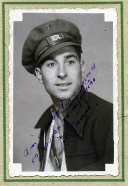 |
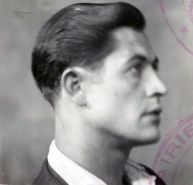 |
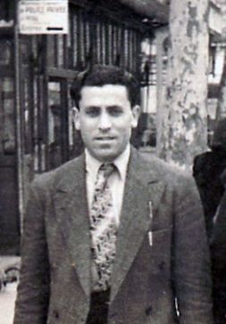 |
| “Andrés”, “Ramiro” y “José María”, el nuevo Comité Regional de Levante. Los dos primeros fallecerían en Cerro Moreno (Fotos del Archivo del PCE y familias). |
Hacia mitad de junio, el día 18, saldría el grupo de Doroteo Ibáñez Alconchel, “el Maño", el más experto de los guías con Francia del AGLA. Este era su quinto viaje, y aún realizaría otro más entre agosto y octubre de 1950. El grupo de “Ibáñez” lo componían “Andrés”, “Ramiro”, “Eulogio”, “Pedro”, “Emilio”, “Lorenzo” y el acompañante habitual de “Ibáñez”, “José el Alicantino”" (Ramón Escrivá Furió). Su línea de entrada, ya utilizada en su primera incursión en septiembre de 1945, fue por Aragón, Sierra de Santo Domingo, zona de Azuara, su pueblo natal, Mosqueruela, Javalambre, Camarena. En el mes de septiembre, hacia el día 15, conectarían con los acampados en Cerro Moreno: “El día 17 de septiembre, que ya de antemano esperábamos nosotros, llegan cuatro camaradas del Batallón antes “Vitini”, ya enlazo con esta unidad. Ellos conocen dónde para el Estado Mayor. Unos salen para que “Pepito” responsable de la Agrupación venga a donde nosotros hemos acampado y otros en busca de “Grande”, responsable del 11º Sector”, escribe Doroteo Ibáñez”.
El campamento de Cerro Moreno era uno de los más estables que disponía el AGLA por esas fechas. Otros cercanos estaban situados en Camarena, el Bercoloso, Benagéber, Fuencaliente, Cofrentes. Cerro Moreno es una de tantas estivaciones, de forma redonda, intermedia entre la Sierra de las Cuerdas y la de Javalambre, al sur del Rincón de Ademuz, aspirando el rumor del río Turia que por Santa Cruz de Moya crece joven, se engarganta y serpentea. Cerro Moreno tiene un duro y empinado acceso a pie por sus caras este y oeste, y se halla custodiado en sus vertientes norte y sur por la mole en filo de unos más que respetables peñascos. El campamento guerrillero, el cuarto o quinto de los que hubo por la zona desde 1946, encarado al poniente, mirando hacia Santa Cruz, Manzaneruela, o Landete, estaba situado en una zona boscosa de pinos, enebro y abundante matorral. Como todos los de la AGL por estas fechas se componía de diversas tiendas de campaña, sujetas sus bases con piedras, con capacidad para cuatro personas normalmente. En las proximidades se buscaba un lugar donde el humo no delatase la presencia de los guerrilleros, y otro, el monte es amplio, de servicios. La ubicación del campamento parece que exigía al menos que hubiera dos guardias constantemente aunque como nos informa “Alfaro” por aquellos días tan sólo funcionaba una y por el día. Cada guerrillero siguiendo el turno establecido y anotado en un papel que colgará de un pino realiza este servicio de vigilancia durante dos horas situándose no muy lejos de la zona de tiendas, cara al río. Este documento le servirá a posteriori a la guardia civil para identificar a los fallecidos.
Por estas fechas, antes de la llegada de “Ibáñez”, el jefe del Batallón al que se incorpora el nuevo cuadro de mandos era “Francisco” (Emilio Argilés Jarque). Es el mismo grupo que antes dirigiese “Vitini” (Francisco Martínez Lara), pero que meses antes había desertado desde un campamento de Bronchales, según “Ibáñez”, junto con “Nelson” (Francisco Jurado) aunque no parece que fuese así en el caso de este último, aunque sí con “Bienvenido” y “Mateo”, dirigiéndose los tres a Francia, vía Cella y Zaragoza: “De este Batallón de antes “Vitini” que anda por esta zona sobre la provincia de Teruel, Cuenca y Valencia no está tan bien. Cuando desertaron los tres responsables, a raíz de esto marchó otro llamado “Tomás” del pueblo de Tormón, y ya antes de estos marchar, todos de este Batallón muy mal. Una de las veces “Vitini” le dijo a “Juanito”, paisano de este “Peñarronda” (se refiere a “Peñaranda” que al igual que “Juanito”, “Amancio” y “Joaquín” son de Rubielos Bajos), que si continuaba mucho en guerrilleros vería mucho y malo, que no se marchaba bien. Cuando éstos desertaron fue “Francisco” quien detuvo el descontento entre la unidad. Este “Francisco” es uno de estos alrededores, no es el del 17º, más adelante daré la conducta del otro “Francisco”. Cuando éstos desertaron, subió el “Grande” y nombró responsable de esta unidad a este “Francisco” (Informe de “Ibáñez”)".
En el campamento, tras la llagada del grupo, se disponía de ciertos medios para la acción guerrillera: multicopista con que editar Mundo Obrero en lugar de El Guerrillero (1946-1949), ejemplares traídos de Francia así como fotografías dedicadas de Dolores Ibarruri, cámara de fotos, emisora y radio con la que contactar y escuchar las emisiones de radio Pirineica, (aparato de radio que requisara la guardia civil, por lo que el grupo reorganizado tendrá que comprar otra por 9.500 ptas.), materiales teóricos, informes de los Sectores, guiones de las reuniones, sellos de la Agrupación, armamento (“con las armas que tenían” escribirá “Teo”) y una respetable cantidad de dinero, cercano a las 250.000 ptas. cuyo objetivo era potenciar la labor política e ir abandonando las acciones de abastecimiento que mayormente recaían sobre una población con medios más bien escasos y de la que los propios guerrilleros se nutrían (“esto no era muy bueno, porque hacíamos dos males” anotará “Casto” en su Informe). Ciertamente los servicios de abastecimiento como acción guerrillera resultaban impopulares y conllevaban infinitos riesgos. Los guerrilleros por esta época también tenían una asignación de 500 ptas., de difícil cobro, por si se viesen descolgados en alguna situación.
Durante todo el mes de octubre el campamento había estado muy concurrido con entradas y salidas de guerrilleros casi todos los días. El hecho de que llegasen de Francia nuevos cuadros originó que los jefes del AGLA fueran convocados para recibir nuevas instrucciones. Por allí pasaron “Pepito el Gafas”, “Grande”, “Manso”, “Teo”, “El Viejo” y el responsable del PCE en Valencia “Tomás”, incorporado a la dirección regional desde Francia a finales de 1946.
| 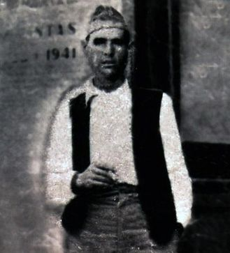 |
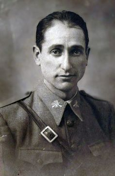 |
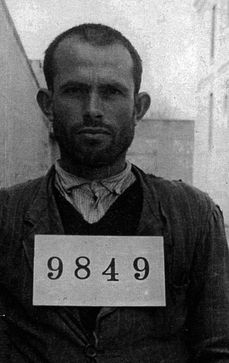 |
| “Ángel”, “Cándido” y “Alfaro”, los tres de San Martín de Boniches. Los dos primeros fallecen en Cerro Moreno, el tercero se encontraría en tarea de suministros para ese campamento ese mismo día (Fotos familiares y del AHD). |
Otro hecho significativo que aumentó la presencia de maquis en el campamento fue lo ocurrido en San Martín de Boniches a finales de septiembre y durante el mes de octubre. “Ibáñez” lo recuerda así: “En el 5º Sector que “Pepito” tenía su base, marchaba bien, muchos enlaces, sólo del pueblo que suministraba al Estado Mayor eran 15 y todos subían al campamento, cuando les parecía subían por la noche al campamento a oír la radio, cayó uno de estos enlaces y el resto ha tenido que ingresar en las guerrillas, donde se les ha creado una mala situación por estas unidades”. A su vez “Pedro” relatará que “salieron dos camaradas enlaces para casa “Juanito” para ver qué repercusión había tenido la obra traidora del elemento que se entregó... volvieron los enlaces enviados con la noticia de que todo había ido abajo en la antigua base y que se habían incorporado 14 camaradas de los cuales trajeron a 8, dos que convinimos que volvieran a aquella zona, 5 que cogieron en el asalto y otro que salió con “María” a por carne el día 5”. En realidad, tal como se relata en el artículo publicado en esta misma revista (“Los maquis en las montañas de San Martín de Boniches”, Olcades, n° 3), la entrega de “Regino” (Lucas Villar Garcés) de la partida de “Paisano” dio pie a que todo el grupo de enlaces del pueblo de San Martín de Boniches se echara al monte en dos fases, once a finales de septiembre y tres más a principios de octubre.
La escena de las manzanas
Mientras se espera a “Pepito el Gafas”, los enlaces habían salido en su busca hacia el Sector 5º, ocurre la escena de las manzanas que nos relata “Ibáñez”:
“Quiero recordar un hecho que sucedió entre nosotros estando ya algunos camaradas de la AG, fue lamentable, pues ocurrió que cuando registraron la casa del enlace en Mas del Olmo, se prescindió de bajar al pueblo por asistencia hasta que no pasaron cuatro días por si hubiese sospecha en nosotros y estuviesen al acecho. En estos días nos encontramos mal de comida y la única solución que había era ir a la huerta por cuatro manzanas y uvas que otra cosa no había y ya habíamos ido otra vez un camarada de los de la AG, “José” y yo y habiendo perdido toda la noche para llevar muy poca cosa, que además que no valía la pena de hacer ese sacrificio y al mismo tiempo hacer rastros en un paso del río Turia por donde tenían que venir “Pepito” y otros más. Por segunda vez me llamo “Andrés” y me dijo que debo ir yo, con “José”, “Pedro” y otro más, a por algo de fruta, yo dije que no era prudente hacer señales allí donde estos frutos se encuentran, pero que al no haber otra cosa, iríamos y ya todos los que íbamos a salir preparamos los macutos y “José” dice que él por fruta no va, y dirigiéndose a “Andrés” le dijo que si no sabían organizar las cosas, que no se pusieran y que no tenían en cuenta que a mí no me quitaban ningún servicio siendo que debíamos de descansar para la vuelta a Francia que, vosotros conocéis, es duro, y “José” les dijo que él informaría aquí en Francia cuanto ha visto de todos, y “Andrés” y “Pedro” dijeron que ellos también informarían, que no les hacía miedo cuanto “José” pueda informar al P. Pero “Andrés” nos reúne a todos los presentes y pregunta uno por uno si estábamos de acuerdo de que se fuera a por fruta, y yo desde luego dije que por parte mía no iba, no por el sacrificio de ir, sino que había que contar que por donde cogemos esto es un paso de nosotros y que esperábamos de un día a otro a camaradas y se podía dar el caso que a causa de esperar a quienes cogemos las cosas tengan un encuentro “Pepito” y demás. Por mayoría se acordó ir a la huerta y justamente aquella noche pasó “Pepito”. A la mañana siguiente nos reunimos la dirección del Partido y a mí me llamó la atención porque dije a gusto mío no iba a por fruta. Yo reconocí que después de lo dicho por “José”, yo no debía haber dicho esto. También me llamó la atención de si yo tenía algo contra “Andrés” y que hacía unos días que yo no era el mismo; yo no tengo rencor ni a “Andrés” ni a ninguno, sino que hay días que en mi carácter no soy el mismo; esto quedó así. Llaman a “José” para llamarle la atención sobre lo ocurrido. “Andrés” le dice que venían observando en él hacía ya tiempo que trataba de provocar, así como otro día que al tiempo de salir a un servicio con “Lorenzo” le dijo a “Lorenzo” que no valía para llevar hombres, esto también trajo discusión entre “José” y “Lorenzo”; de todo esto ya lo podréis ver por el informe de “Andrés”, “Pedro” y “Ramiro” (Informe de “Ibáñez” de la AGL, 30 noviembre, 1949)”.
Si el día 15 de septiembre, el grupo de “Ibáñez”, con “Andrés” como nuevo jefe de toda la Agrupación, toma contacto con los acampados en Cerro Moreno, es el 17 cuando pueden acceder propiamente al campamento. El primer trabajo a realizar es verse con los jefes de los Sectores para tener con ellos una reunión general. En consecuencia se mandan enlaces en busca de “Pilar” (“Pepito el Gafas”) (en los informes internos, además de apodos también se utilizan nombres en clave) y de “Grande”. Esto ocurrirá el día 21. A primeros de octubre, el día 2 llegaran “Pilar”, “Carmen” (“Teo”), “el Viejo”, “Paco”, y “Manso”. Poco después, el día 4, “Grande”, “Peñaranda” y “Carlos”. Una vez toda la plana mayor de la AGL se halla presente, se celebran las reuniones durante los días 13 de octubre al 16 del mismo mes. Desconocemos los acuerdos tornados, pero bien parece que iban encaminados a reestructurar la organización dándole un contenido más político, evitando las acciones de captación económica para no tener que crearse un mal ambiente entre la población, asumiendo un cambio de táctica donde los guerrilleros serían instructores de las gentes campesinas. Se potencian en consecuencia los Comités Regionales y se sustituye, como ya queda dicho, El Guerrillero por Mundo Obrero. El dinero que se manejará en el campamento es indicativo de lo mismo. La idea, sin embargo, no parece que cuajó. Ni tan siquiera cuando se plantease la “renuncia a nuevas incorporaciones de los contornos” en favor de los que lleguen de Francia más capacitados para esta nueva orientación política. Dos días antes de la reunión general de la Agrupación, el 11 de octubre, “Ibáñez” parte hacia la frontera con “José el Alicantino”, “Manso” para una revisión de sus últimas actuaciones, se hablaba de desmotivación y hasta de maltrato de algún camarada, (“Respecto a la marcha se ha hecho sin novedad hasta Garde, no hubo problemas ninguno entre el grupo, y el “Manso” se ha portado bien sin protestas ninguna” informará “Ibáñez”), a los que también acompañan “Peñaranda” (Ángel Ruiz Toledo) para ser operado del tabique nasal, y “Cuatro Ojos” (José Zuriaga Mínguez) y “Maguán” (Francisco Menéndez Martínez) por estar incapacitados para el servicio.
El día 11 parte hacia Francia el grupo de “Ibáñez”, y el 20, tras haberse celebrado las reuniones, empiezan a abandonar el campamento los diversos jefes de Sector. Esa noche lo harán hacia el campamento de Manzanera “Carmen” (“Teo”), “Paco” y “el Viejo”. El día 24, igualmente, hacia diversos sectores de Valencia “Grande”, “Tarzán”, “Rufino” y “Elvira” (“Tomás”). Poco a poco el campamento se va despejando, sin embargo el día 25 de octubre vuelve otra vez a estar concurrido. En esta ocasión con la llegada de once guerrilleros. Es el grupo de San Martín de Boniches ya citado. A finales de septiembre todo el conjunto de enlaces de dicho pueblo se había echado al monte tras la entrega de “Regino” (también apodado “Luquillas”, de La Cierva) y la detención del enlace Cayo Alcalá. Algo de eso resuena en las palabras de “Pepito el Gafas” cuando llega al campamento el día 2 de octubre. El día 13, al inicio de las reuniones, se había enviado a dos enlaces para que informaran de lo sucedido. El día 25 volverán los dos enlaces más ocho de los nuevos guerrilleros (“Fermín”, “Cándido”, “Nicasio”, “Ángel”, “Conrado”, “Alfaro”, “Agapito” y “Felipe”) conjuntamente con otro responsable del Sector 5º.
| 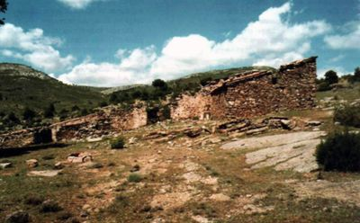 |
Por los recovecos de la sierra (La Manglana, San Martín de Boniches) aún quedan fragmentos de tinadas y rentos que fueron utilizados como refugios de urgencia por los guerrilleros (Foto de Santiago Torralba). |
Pero de nuevo el problema de la aglomeración de guerrilleros se tuvo que plantear. Así el día 3 de noviembre regresan para Cuenca, con el fin de preparar algún campamento nuevo tanto “Pepito el Gafas” como “Agapito” y “Felipe”, y los enlaces del Sector. El día 2, lejos de allí, había tenido un enfrentamiento un grupo de guerrilleros que volvía a la base tras repartir propaganda en los pueblos del límite provincial entre Guadalajara y Cuenca. Acaeció en La Rodea (Cañizares), en él caía muerto el jefe del 5º Sector "El Capitán", un extraordinario guerrillero con dos puntos oscuros a fecha de hoy por aclarar en su biografía, a saber: las muertes del Jefe de la Agrupación “Ricardo” (Pelegrín Pérez Galarza) y la de “Flores”: “La otra dolorosa noticia es que el 2 de noviembre en una emboscada fue muerto el camarada “Capitán”. Él no sabemos aún por qué iba en la marcha el primero y fue el único alcanzado por los disparos. Según la primera información que tenemos unos días antes los habían visto por ese lugar que ocurrió el hecho, al parecer ellos no vieron a quien les vio y a la vuelta al pasar por el mismo sitio fue cuando les hicieron la emboscada” (Informe de “Pedro”). Dos días antes del asalto, en el campamento se encontraban dieciocho guerrilleros. Cinco de ellos, “Alfaro”, “Emilio”, “Francisco”, “Julián” y “Fernando” saldrían a por carne a la zona de la Sierra de Camarena (Arcos de las Salinas) la noche del día 5 al 6 de noviembre. Cuando regresaban al amanecer del día 8 se encontraron con todo el monte removido, los enseres del campamento amontonados y subiendo y bajando guardias al cerro todo el día. Escondidos los cinco debajo de las ramas de un pino, al pie del cerro, contemplaron lo que estaba ocurriendo.
| 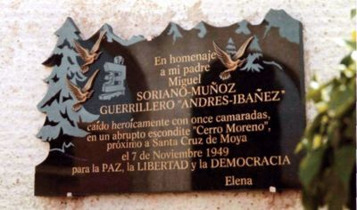 |
Esta placa en el cementerio de Teruel, dedicada por su familia, identifica por primera vez a uno de los muertos en Cerro Moreno, Miguel Soriano Muñoz, alias “Andrés”, el jefe de la guerrilla, que en la relación de la guardia civil (ver cuadro) aparece sin nombre conocido (Foto de Salvador F. Cava). |
“El asalto al campamento se inició a las 7 de la mañana del día 7 de noviembre de 1949, y marcó el final de la resistencia organizada en Levante orgullo armado del PCE y, por extensión, en toda España” dice Secundino Serrano, y lo realizaron 500 guardias civiles de las comandancias de Teruel, Cuenca y Valencia y 100 somatenes. Otras fuentes señalan que el total de efectivos de guardias de las Comandancias 134, 135 y 201 era de más de 1.000, y la propia guerrilla y la voz pública apuntan hasta 3.000 en lo que parece un número exagerado, el mismo “Pedro” lo cuantifica en unos mil. A falta de un estudio de los operativos desde dentro de la propia Institución, lo que sí parece seguro es que participaron fuerzas de las tres provincias, todas ellas al mando del comandante del puesto de Landete Ramón Jiménez Martínez, el cual sería gratificado y que toda la operación fue seguida al minuto, pero desde lejos, por el propio General Pizarro.
Los preparativos del asalto debieron de ultimarse en poco tiempo, pues seguramente los informes de que dispondría la Comandancia no serían muy exactos, de ser así hubiesen atacado el campamento durante los días de las reuniones, medio mes antes, porque entonces sí que se encontraba allí toda la plana mayor guerrillera o incluso un día antes del día 7 con cinco guerrilleros más o bien el día 3 con otros cinco, entre ellos “Pepito el Gafas”. Lo cierto es que tras el asalto la guardia civil comentará que sabían que en el campamento “habían de 17 a 18; cuando salió “Carmen” (“Teo”) quedamos 16”. La referencia sin duda va dirigida a las sospechas recogidas con posterioridad contra “Teo” y “Paco” que abandonarían el campamento en la misma salida.
A fecha de hoy es imposible determinar con exactitud sin fisuras cuál fue el origen de sus informes. Tras el encuentro, los propios guerrilleros hicieron averiguaciones y buscaron un culpable directo que nunca se halló, inclusive sobre el mismo “Pedro”, como es lógico, al ser el único superviviente, recayeron no pocas dudas. Del análisis de las Actas de Defunción, fechadas casi un mes más tarde, todas el día 3 de diciembre, por orden del día primero del juez de Cañete a quien la guardia civil le haría llegar el listado, pues en el pueblo de Santa Cruz nadie pudo ver los cadáveres, se sacan conclusiones más que orientativas sobre la posible fuente de información con que contaba la Brigada de Información antes del asalto, información errónea en la que se persiste no sólo un mes más tarde sino incluso a finales de diciembre cuando al “desconocido” (nº 175), uno de los guerrilleros de San Martín, se le inscribe con el nombre erróneo del “Abuelo”.
“Yo estaba en Cerro Moreno”
“Nos echamos trece o catorce al monte en San Martin de Boniches. Desde Las Dehesas de Monteagudo nos trasladaron a mí y a un sobrino mío, hermano de Emencio, Marino, Amador, Aurelio, Basilio, Antonino, Daniel y Cayo, aunque estos dos últimos se vinieron un día o dos antes para acá. En el campamento habían venido seguramente seis u ocho de Francia. Yo no sé los nombres porque estuve poco tiempo allí, estaría dos o tres noches, y ya nos trasladaron a por carne (“Francisco”, “Julián”, “Emilio”, “Fernando” y “Alfaro”); yo no me acuerdo nada más que de “Faico” (“Francisco”) que era el jefe de los cinco que era de cerca de Santa Cruz. Salimos al hacerse de noche, un día o dos antes del asalto, salimos hacia la parte de la Sierra de Camarena a la parte de allá, pero yo no sé aquello cómo fue porque de los cinco nos quedamos tres en una pinada, y dos se fueron por la tarde a ver si veían ganado, lo que yo no sé si estarían con el pastor o no estarían, ni si le pagarían las ovejas o no; y luego ya volvieron y nos dijeron: “Hala, que han encerrado un ganado”, allí en unos corrales que había; que por cierto el “Faico” ese llevaba una metralleta que habían traído los de Francia, y yo llevaba un rifle con dos tiros, de los que uno ya estaba picado, ¡mira qué defensa llevaba yo!, y otro que me parece era de la parte de Teruel llevaba un fusil con un cargador, y al llegar al corral, o un poco antes de llegar nos dice a nosotros dos el “Faico”: "¡Hala, ahora tenéis que ir!". Antes de llegar al corral dice: “¡Parad aquí¡”, allí que había una vaguada; dice: “Tenéis que ir a dar una vuelta al corral”; yo me callé porque llevaba cuatro días, pero aquel muchacho le dice: “Esto, “Faico”, no me parece bien, que os quedéis aquí tres con metralletas y mucha munición, y que vayamos éste y yo a ver si está la guardia civil allí; bueno, pues voy a ir, pero en la próxima reunión que tengamos lo voy a exponer esto, ¿por qué os quedáis aquí con el armamento?, ¿qué vamos a hacer nosotros, yo que llevo cinco tiros y este muchacho dos, que uno ya está picado?”, “Pues tenéis que ir”. Bueno, pues fuimos, dimos una vuelta por el corral por donde estaba el ganado y como no oían tiroteo ni nada pues vinieron deseguida, y yo entré por las ovejas saltando la pared del corral. Me mandaron a mí porque yo había sido pastor. Cogí cinco que se las iba dando una por una al otro. Cogimos una cada uno, ya nos vinimos más para acá, las matamos y lo que hicimos en dos noches para allá descargados, aquella noche lo hicimos en una. Y volvemos al campamento, yo no me acuerdo qué fecha era pero sería un día después del asalto ya de mañana pues daba el sol por todos los sitios y, claro, donde tenían estafeta que estaba a la otra parte del cerro no había nada, y como no vimos nada ya nos metimos cerro alante al campamento. “Me cago en la leche, por aquí unas piedras revueltas” y, claro, como ellos entendían más que yo, pero como no había estafeta ni nada, nos metimos en el campamento, y como desde aquí a la calle vimos todo allí amontonado, las sartenes, las tiendas, la comida, y yo, pues ignorantemente, me quito el macuto y me bajo los pantalones a hacer mis menesteres, cuando veo que tiran para abajo ellos derecho al río que pasa por allí. “¡Ven acá, ven acá!” me decían. Cojo mi macuto sin subirme los pantalones, “¿qué pasa?”, “¡que han asaltado el campamento!, ¿no lo ves ahí todo?”. Nosotros nos corrimos un poco para abajo y allí debajo de un pino que bajaban las ramas hasta el suelo, allí nos camuflamos los cinco, y pasaba un carril por allí a una solana abajo y todo el día subiendo y bajando guardas al monte, y nosotros allí debajo el pino, y es que seguramente estaban bajando los cadáveres por allí por el carril. Claro, ya se hace de noche, nosotros allí todo el día sin comer ni poder asar carne, y el “Faico” nos mandó otra vez a nosotros dos a poner estafeta al mismo sitio por si acaso iba algún otro, y le dijo el de Teruel que con el armamento que llevábamos no íbamos, que si quería iban él y “Faico” con una metralleta, y como no fuimos nosotros “Faico” tampoco quiso ir. Luego “Faico” y otro se quedaron por allí, y los tres restantes nos fuimos para otra parte” (Testimonio oral de Melitón Ruiz Pérez “Alfaro”).
A las siete y media de la mañana, del lunes 7 de noviembre, es cuando “Pedro” sitúa el inicio de los ataques. Hasta las faldas del cerro se había personado la guardia civil en una operación envolvente. Cada comandancia se aproximó por su lado natural dejando los camiones bien lejos y caminando durante toda la noche guiados por guardias del propio pueblo de Santa Cruz de Moya. No parece que estuviera montada la vigilancia en condiciones pues los guerrilleros no se percataron del cerco hasta cuando ya fue casi imposible reaccionar. De haberse dado cuenta, la táctica habitual utilizada en el Sector 11º era la que nos indica “Grande”: “Nosotros, cuando teníamos un asalto, lo primero que hacíamos era disparar una ráfaga de metralleta. Entonces los civiles tenían que hablar, y ese momento era el que aprovechábamos para salir de allí. Ten en cuenta que tampoco teníamos mucha munición. ¿Tú comprendes que se puedan matar de los trece a doce? Es que claro, no les dio tiempo a coger las armas, porque nosotros, mira yo lo máximo que he tenido en un asalto a un campamento es un muerto, lo máximo, y la mayor parte de las veces ni un muerto”.
“Yo no puedo juzgar el asalto porque lo que conozco es por “Pedro”, lo que sí te puedo decir, es que las guardias no estaban montadas cuando yo estaba allí” dirá en su Informe “Teo”. Estamos en noviembre. Empieza a amanecer. “El asalto lo prepararon minuciosamente durante varios días. Nosotros dos días antes vimos alguna hoguera en algún punto de las inmediaciones y no se tomaron ninguna medida; algún camarada dijo: “¡Bah!, será alguna carbonera o pastor y así quedó todo aunque algún otro hizo objeciones para que nos pusiésemos en guardia. Esta preparación la llevaron sin ningún ruido ni manifestación”. Esta dejadez será criticada reiteradas veces desde la propia organización: “Se hablaba demasiado fuerte, se hacía demasiado humo, había demasiados rastros y eso éramos varios los que lo veíamos” escribirá “Teo” en su informe de octubre de 1951, y “José María” en el suyo del año anterior hará referencia a una conversación con “Teo”: “El camarada “Teo” me dijo dónde estaba el campamento, el tiempo que llevaba instalado, las entradas y salidas constantes, la falta de disciplina en lo de guardar silencio, la excesiva alegría con el fuego funcionando casi todo el día con dos lumbres”. El propio “Grande” en la actualidad (fallecería en el año 2009) aún mantiene vivos los consejos que les diera a sus camaradas: “Yo salí de allí, yo les aconsejé, es que eran los que quedaron allí, eran casi todo el nuevo Comité Regional y venían de Francia y traían armas nuevas, tenéis que marcharos de aquí, hay muchos rastros, tenemos sospechas de que a lo mejor alguien conoce ya esto, así que inmediatamente tenéis que marcharos, mañana mismo os tenéis que marchar. Y el camarada “Andrés” me dijo: “Hombre, claro”, y yo me marché con “el Chaval”, que está ahora por Alemania, y otro, nos marchamos a Cofrentes porque teníamos allí unos campamentos y yo quería visitarlos. Y claro, cuando llegamos a Cofrentes, a los cuatro o cinco días me entero del asalto. Porque se ha dado el caso en esta lucha guerrillera que los que más nos hemos salvado hemos sido los que nos hemos incorporado de aquí, de aquí no de fuera, porque conocíamos al franquismo, y ellos en Francia, era jauja al lado de lo que ocurrió aquí, porque tenían de todo y todo el mundo estaba en eso. Y estos hombres tenían una moral, pero yo antes de que ocurriera eso discutí con ellos y les dije: “Mira que estáis equivocados, que esta lucha no es aquella”, y esta gente cometió esa torpeza”. A todo ello además podríamos añadir las palabras de “Alfaro” (Melitón Ruiz Pérez): “Íbamos a por agua a un vallejo, al vallejo ese que viene derecho a Santa Cruz, y a la umbría arriba sube un carril, bajábamos desde lo alto del cerro a por agua, pues ellos (la guardia civil) se mosquearían también, si vieron la senda pequeña, los resoberos que había de subir y bajar, todas las noches bajábamos tres o cuatro a por agua, pues fíjate”.
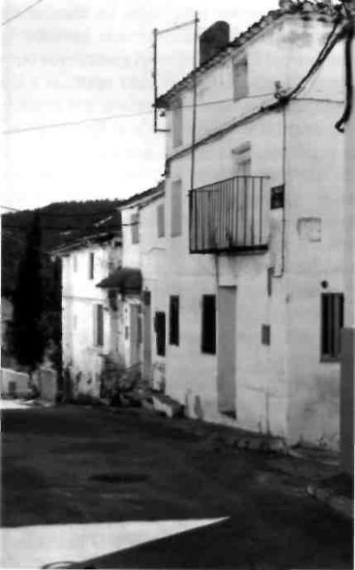Un amplio extracto de la narración de “Pedro” se puede consultar en el libro de Fernanda Romeu y en los anexos de Memorias de un guerrillero de “Germán”, hermano del joven de 17 años (“Fermín”, Acta 172) fallecido en Cerro Moreno. “Pedro” nos dice que la guardia civil atacó el campamento a ráfagas de naranjero y bombas de mano por la parte donde tenían el retrete. En esa mañana se encontraban trece guerrilleros. “Ramiro”, “Vidal”, “Lorenzo” y varios camaradas más en la zona donde se hacía la guardia; “Andrés” y “Pedro” cerca de la cocina. Dirigían los tiros hacia las tiendas de campaña. Los guardias tenían tomada también la cumbre del Cerro (véase la narración del cabo Canario en mi libro de Los Guerrilleros de Levante y Aragón, Tomo II). Todos los guerrilleros buscaron la retirada por el lado opuesto a los disparos, mirando a la carretera, a la izquierda; intentaban llegar hasta el fin del pinar, aunque para ello tenían que pasar un claro de labores perdidas. Formaban una línea de unos 50 metros, cerraban el grupo “Andrés”, “Pedro” y dos camaradas de los nuevos de San Martín, el joven “Fermín” era uno de ellos. En esos primeros momentos “Andrés” tuvo que dejarse la metralleta colgada de un árbol y “Pedro” respondió a los tiros con poca fortuna pues su arma se le encasquilló.
Al cruzar el descubierto fue cuando debieron caer abatidos algunos de los doce guerrilleros. En concreto ahí es donde sitúa “Pedro” la muerte del jefe de la Agrupación, “Andrés”, del cual parece no alejarse, incluso una vez muerto, de “un tiro de bala explosiva que le entró por un costado y le salió por el otro haciéndole a la salida una gran herida". Tras esto, recoge y esconde “bajo la josma del pino y un enebro”, aprovechando un breve alto de fuego y mientras los guardias empiezan a estrechar el cerco, los cargadores, la pistola, la cartera con las fotos familiares, su documentación, el cliché con el código de nombres, diversas direcciones de responsables del Partido, algunos folletos teóricos, la pluma, el reloj y el sello que llevaba de la Jefatura de la Agrupación, así como el dinero: 90.000 pesetas. El resto del grupo se había alejado siguiendo la vertiente izquierda del monte y “dando cara a otro cerro alto que dominaba toda la parte aquella”. Sólo un joven de 17 años (“Fermín”) estaba cerca de él, y por poco tiempo pues al ser descubiertos y empezar de nuevo los disparos, tanto uno como otro buscaron una salida monte abajo siempre hacia su lado izquierdo. “Fermín”, "el joven camarada, también tiró hacia abajo más a la izquierda que yo y le asesinaron a pesar de que gritó que se entregaba”. “Pedro”, a partir de este momento, pierde todo contacto con cualquier otro componente del grupo. La narración personal de su huida, más que afortunada, incluye alguna herida, el deshacerse de la metralleta en mal estado, el esconderse bajo un “pino grande y con mucho ramaje”, el perder sangre, la resignación ante un final previsible, “me dispuse a vender cara la vida hasta que me quedara un tiro y resuelto a salir si podía”, el ser de nuevo descubierto, el disparar su pistola a bocajarro tanto a quien lo descubre como al grupo que rodea el cuerpo sin vida del joven camarada, pasar con suerte entre varios frentes hasta alcanzar otro monte, curarse la herida y sortear un barranco para, agotado, ponerse a salvo. “Me estuvieron buscando hasta las 2 de la tarde que empezaron la retirada” comentará para terminar esta parte de su más que afortunada salvación.
Los muertos de una guerra no declarada
PRIMER TERCIO DE LA GUARDIA CIVIL 201ª COMANDANCIA
RELACIÓN NOMINAL de los bandoleros muertos en encuentro con la fuerza de esta Comandancia desde 1946 hasta la fecha
Nombre y apellidos |
Nombre de guerra |
Fecha en que murieron |
Se ignora |
Se ignora |
23 junio 1946 |
Se ignora |
Se ignora |
28 septiembre 1946 |
Se ignora |
Se ignora |
30 enero 1947 |
Se ignora |
Se ignora |
30 enero 1947 |
Se ignora |
Se ignora |
30 enero 1947 |
Se ignora |
Se ignora |
30 enero 1947 |
Se ignora |
Se ignora |
30 enero 1947 |
Se ignora |
Se ignora |
30 enero 1947 |
Se ignora |
Se ignora |
31 enero 1947 |
Se ignora |
Se ignora |
31 enero 1947 |
Se ignora |
Se ignora |
31 enero 1947 |
Se ignora |
Se ignora |
3 mayo 1947 |
Se ignora |
Se ignora |
5 agosto 1947 |
Se ignora |
Se ignora |
28 abril 1948 |
Amancio Simarro Lozano |
Se ignora |
5 mayo 1948 |
José Soria Ibáñez |
Eduardo |
20 junio 1948 |
Federico Sevilla Martínez |
José |
20 junio 1948 |
Francisco González García |
Enrique |
20junio 1948 |
Se ignora |
Manolo |
29 julio 1948 |
Se ignora |
Germán |
22 agosto 1948 |
Ramón Alises Moreno |
César |
l6 octubre 1948 |
Jesús Sevilla Herraiz |
Martín |
l6 octubre 1948 |
José Argilés Jarque |
Manolete |
l6 octubre1948 |
Se ignora |
Jesús |
l6 octubre 1948 |
Constantino Herraiz |
Pena |
16 octubre 1948 |
Eusebio García Martínez |
Domingo |
9 diciembre 1948 |
Emilio Frunsaiz Marín |
Se ignora |
8 marzo 1949 |
Antonio Herraiz Penuelas |
Peque |
8 marzo 1949 |
Pedro Chumillas Sotos |
Pinilla |
21 abril 1949 |
Federico Gallego García |
Eugenio |
3 junio 1949 |
José María Obrero Rojas |
Luis |
23 septiembre 1949 |
Herminio Montero Martínez |
Argelio |
23 septiembre 1949 |
Atanasio Serrano Rodríguez |
Capitán |
2 noviembre 1949 |
Se ignora |
Manolo |
7 noviembre 1949 |
Se ignora |
Eulogio |
7 noviembre 1949 |
Se ignora |
Andrés |
7 noviembre 1949 |
Se ignora |
Ramiro |
7 noviembre 1949 |
José Cavero de la Cruz |
Bartolo |
7 noviembre 1949 |
Lope Rodríguez Rodríguez |
Vidal |
7 noviembre 1949 |
Basilio López Alarte |
Ángel |
7 noviembre 1949 |
Antonino Sánchez Valero |
Conrado |
7 noviembre 1949 |
Amador Huertas Jiménez |
Candido |
7 noviembre 1949 |
Aurelio Huertas Pla |
Nicasio |
7 noviembre 1949 |
Marino Alcalá Ruiz |
Fermín |
7 noviembre 1949 |
Manuel Gracia Jarque |
Lorenzo |
7 noviembre 1949 |
Fernando Montero Martínez |
Luis |
13 febrero 1950 |
Se ignora |
Gonzalo |
23 abril 1950 |
Victor Placido Pérez García |
Tomás |
23 abril 1950 |
Pedro Torregrosa de la Rocha |
Juanita |
23 abril 1950 |
Cayo Alcalá Lagunas |
Felipe |
2 mayo 1950 |
Francisco Navarro Cruz |
Manolo |
27 mayo 1950 |
Julián Antón López |
Valencia |
27 mayo 1950 |
Nazareo Sáez Montero |
Bernardo, Sastre |
4 agosto 1950 |
Cesáreo Fuentes Ávila |
Olegario |
4 agosto 1950 |
Mariano Pardo Fernández |
Francisco |
4 agosto 1950 |
Julián Sánchez Huertas |
Martín |
4 agosto 1950 |
Nicolás Martínez Rubio |
Enrique |
4 marzo 1951 |
Francisco Serrano Valero |
Bienvenido |
4 marzo 1951 |
Daniel López Herraiz |
Antonio |
9 mayo 1951 |
Se ignora |
Ricardo |
9 mayo 1951 |
Francisco Martínez Leal |
Cristóbal |
12 mayo 1951 |
Heliodoro Sanchez Huertas |
Asturias |
12 mayo 1951 |
Tomás Labatut Briones |
Samuel |
15 mayo 1951 |
César García Lerín |
Loreto |
24 mayo 1951 |
Francisco Mariano Campillo |
Rafael |
24 mayo 1951 |
Rafael Galindo Royo |
Mauro |
24 mayo 1951 |
|
|
|
Cuenca, 23 de febrero de 1952 EL TTE. CORONEL PRIMER JEFE |
Las noticias del asalto, según lo relata “Pedro”, fueron inicialmente confusas: “Yo no creía que podían haber caído 12 y esperaba juntarme con alguno de ellos”, dirá. Más adelante reiterará de nuevo el número de los fallecidos comentando que tras el criminal ataque “parece que cogieron algún camarada en grave estado y allí lo remataron brutalmente. Según noticias de los mismos civiles llevaban la orden de no hacer más que muertos. No sabemos si a algún camarada en estado grave le sacarían alguna declaración. En el asalto tomaron parte unos mil guardias al mando de un teniente coronel que no sabemos su nombre; iban divididos en tres grupos, los de Valencia, Teruel y Cuenca, siendo los de Teruel los que atacaron el campamento. Los cadáveres los desnudaron y arrastrados hasta cargarlos en los mulos. Los llevaron a Teruel. Según noticias ellos tuvieron 18 muertos y varios heridos; otros dicen que tuvieron algún muerto y algún herido pero sin precisar”. Los informes de la guardia civil anotarán el repetido y obligado “sin bajas” como forma de contrarrestar los éxitos publicitarios de la Agrupación. Es posible que en este caso así fuera habida cuenta de los pormenores de la narración de “Pedro”, de la sorpresa y contundencia del ataque, y de la falta de experiencia militar, seguramente todavía no dispondrían de armamento propio ni en condiciones, de los recién incorporados del Sector 5º, pero también cabe pensar, en este caso de modo contrario. El grupo recién llegado de Francia traía armamento nuevo, el asalto duró demasiadas horas para aceptar que no hubiese respuesta por parte de los fallecidos, incluso en los comentarios recogidos en el pueblo se dice que “desde uno de los escarpes de las rocas del lado norte un guerrillero dio cuenta de bastantes civiles antes de caer abatido”. Desde luego nadie tampoco vio los cadáveres de las posibles bajas de las fuerzas represivas. En este caso serían evacuados no hacia La Olmeda como los guerrilleros, sino hacia Mas del Olmo.
En el Registro Civil de Santa Cruz de Moya constan como fallecidos, desde el número 164 al 175 respectivamente los siguientes guerrilleros: Francisco Corredor Serrano “Pepito”; Manuel Gracia Martín “Lorenzo”; José Cabero de la Cruz; Emilio Argilés Jarque; Lope Rodríguez Rodríguez “Francisco”, “Vidal” y “Vallanca”; Desconocido “Ramiro”; Desconocido “Manolo”; Desconocido “Eulogio”; Desconocido (“Fermín”); Desconocido (Diligencia actual, Basilio López Alarte “Ángel”); Desconocido “Andrés”; Desconocido (Diligencia, Mateo Sánchez Arrazola “Abuelo”). El listado de nombres esconde, como vemos, entre otras varias al menos tres claras equivocaciones pues tras la inscripción de “Pepito el Gafas”, “Francisco” (Emilio Argilés) y el “Abuelo” se da sepultura a tres guerrilleros de San Martín de Boniches y el del joven “Fermín” y el de “Ángel” se dejan sin nombre pues es más que probable que a la Comandancias les pillara por sorpresa su aspecto, quien a partir de los datos filtrados que disponía a la hora del asalto quiere calcar su información sobre los cadáveres. El desconocimiento de la presencia de los guerrilleros de San Martín en Cerro Moreno, puesto de manifiesto durante bastantes meses no sólo en las Actas de Defunción sino incluso en la documentación interna del propio Cuerpo, nos lleva a pensar que sus informes venían de tiempo atrás, pero no muy de tiempo atrás, pues conocían el aspecto y los apodos de los guerrilleros del Estado Mayor que se encontraban por esas fechas en el campamento. Dudo que la información proviniese de Francia, pues no hay ninguna referencia al grupo de “José María” que también había salido de allí incluso antes, y que también tenía este destino.
Del análisis de los escuetos datos forenses se deduce una especial crueldad en el trato dado a los guerrilleros: “No pudiendo apreciar más rasgos en la cara”, “tiene la cara y cabeza destrozada”, etc. La guardia civil en este enfrentamiento se entregó con saña a su labor de exterminio del maquis. “Parece que tenían orden de no dejar vivos” se recoge en algunos informes. Idéntica actitud de desprecio y falta de humanidad con el que desde un punto de vista militar podría considerarse como su “enemigo” se advierte en muchos otros enfrentamientos, donde también los cadáveres son arrastrados, tirados rodando cuestas abajo o rematados a discreción una vez ya fallecidos. Podríamos relatar aquí también las muertes en Reíllo de “Mauro”, “Loreto” y de “Chatillo de Sisante”, o incluso la de uno de los últimos guerrilleros del 5º Sector, “Samuel”, el hijo del “Capador de Sotos”. Hemos de consignar por último en este apartado que la guardia civil como norma hizo fotografías de los fallecidos en aras a su identificación. Las fotografías duplicadas y repartidas por las distintas comandancias fueron mostradas a los guerrilleros que se entregaban o se detenían. Así consta por ejemplo, entre otros varios, en el proceso del “Manco de La Pesquera” quien sólo puede reconocer la de Amador y la de Basilio, o en el de José Parejas Garrido, 1954, donde se intenta identificar a “Manolo” como Simón Giménez Garrido, hermano de “Jacinto”.
Los fallecidos fueron “Andrés” (Miguel Soriano Muñoz) Jefe de la Agrupación, “Ramiro” (Juan José San Miguel Recio) responsable de la dirección política, “Lorenzo” (Manuel Gracia Martín), y el radiotelegrafista “Eulogio” (Jesús López Mirasol) del grupo de mandos recién llegado de Francia, “Vidal” (Lope Rodríguez Rodríguez), “Manolo” (Simón Giménez Garrido) y “Bartolo” (José Cavero de la Cruz) que ya estaban en el campamento, y los cinco nuevos incorporados de San Martín de Boniches: “Fermín” (Marino Alcalá Ruiz), “Candido” (Amador Huerta Jiménez), “Nicasio” (Aurelio Huerta Pla), “Ángel” (Basilio López Alarte), y “Conrado” (Antonino Pérez Hernández). Sus cuerpos serían bajados a rastras con caballerías hasta la falda del monte. Desde allí trasladados en mulos hasta el barrio de La Olmeda, para después, sin dejar que la gente saliese de sus casas, conducirlos en un camión hasta Teruel, en cuyo cementerio, en su parte civil, serían enterrados en las zanjas primera y segunda.
La consecuencia inmediata del asalto por parte de los guerrilleros que no se encontraban en el campamento es el abandono del lugar que queda vigilado durante un buen tiempo. A “Pedro” le cuesta contactar con el grupo que se había salvado por estar de avituallamiento. Nadie se atreve a poner estafeta en un primer momento nos confiesa “Alfaro”. “Los contactos y recursos como una consecuencia quedaron unos rotos y otros medio descompuestos pues hasta más de un mes ha habido una vigilancia muy cerrada por los puntos que más nos servimos para el trabajo”, por lo tanto hubo que abandonar el lugar, anota en su informe “Pedro” para añadir: “Por otra parte queridos camaradas, hasta que yo me junté con los camaradas y nos hicimos con la información imprescindible de lo ocurrido pasó algún tiempo dado que el grupo que quedaba por aquel lugar tuvo que abandonarlo”.
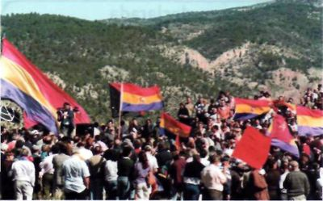
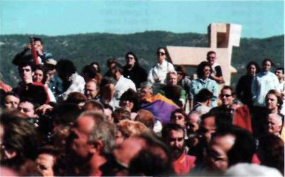 |
Cada año, Santa Cruz de Moya es punto de concentración de supervivientes, familiares y estudiosos de la guerrilla antifranquista. Un monumento al aire libre les recuerda y sirve de punto de referencia (Fotos de Santiago Torralba). |
Tras el asalto, el día 10, el grupo de “José María” llegará a la estafeta del campamento. “Pedro” se verá con ellos el día 16, “después de 9 días de tumbos”, aunque antes seguramente, tras dos días de espera en el “punto de concentración”, o sea hasta el 11, conectaría con los que habían ido a por carne, desde donde abandonaría el monte uno de los “nuevos incorporados”, “Alfaro”. El día 16 de noviembre también vuelve “Pepito el Gafas” con un enlace del 5º Sector, el día 20 “José María” y “Teo” que también por esas fechas se encuentra con el grupo examinan lo ocurrido, el 29 “Pedro” puede ver a “Pepito el Gafas”. Hasta las navidades de ese año no logra “Pedro” volver con el nuevo equipo de mandos de la AGL al campamento y, a la vez que explicar sobre el terreno la muerte de “Andrés” y su propia huida, recoger de donde los había escondido los documentos y el dinero “haciendo un total de 147.000 mil pesetas” (sobre este particular cabe comentar la torpeza de la brigada de remover el monte, acción que se realizó días después del asalto tanto para no dejar huellas como para localizar cualquier documentación del AGLA). La decisión más importante, no obstante, que se tomará la comenta “José María”: "Ante la necesidad de enlazar con la dirección del P. yo le propuse (a “Pedro”) que debía salir él con “Pepito” y así lo hicieron” (Informe de “José María”, En campaña, 21/10/50). Tanto “Pedro” como “Pepito el Gafas” desaparecían de la vida de guerrillas en la segunda mitad de 1950. Ambos en muerte sin aclarar.
Aunque la preocupación más constante y de inmediato, tras el fatídico día, sería la de intentar aclarar de dónde había surgido la información con la que la guardia civil contaba. En este sentido las averiguaciones tomaron cauces diversos, aunque sin ningún resultado preciso de culpabilidad reconocida, pero sin que se libraran de las sospechas varios de los propios guerrilleros. Así hasta seis teorías manejó la dirección del AGLA, atendiendo a su convicción de que “el asalto era obra de una mano traidora y que el enemigo iba sabiendo quiénes había en el campamento”, la mayoría de ellas recogidas oralmente por enlaces en comentarios de los civiles, a saber: 1ª “Que uno de los nuestros se había entregado a la guardia civil y que lo había denunciado. Decían que este tal había venido de Francia hacía un año o año y medio, que era un guardia civil retirado o que estaba en el servicio. Un enlace nuestro dijo ver al que denunció el campamento, se lo indicó un guardia en un café en ocasión de que allí se encontraba la brigadilla con dicho traidor. Las señas que daba el era: De una estatura mediana más bien baja, colorado de cara y esta un poco redonda, fuerte de hechura”; 2ª “que habían detenido a dos camaradas entre los que iba alguno de Manzanera, decía el rumor que esto se produjo por este mismo pueblo. Fue una noticia muy confusa y no se le dio mucha importancia. Después hemos pensado que podía tener esto relación porque las señales que damos del elemento en cuestión coinciden con “Paco” que es de ese pueblo, que salió con “Carmen” y “el Viejo” el día 20 de octubre”; 3ª “que un leñador nos vio y que denunció el campamento a la guardia civil”; 4ª “una patrulla de civiles que había visto rastros nos localizó”; 5ª “que uno mismo de los que nos suministraba nos denunció”; y 6ª “que un enlace de una de las aldeas de allí les llevó al campamento y que dicho elemento se ha trasladado a Valencia”. La primera de las teorías, sin nombrarlo, lanza su dardo contra “Teo” y la segunda contra “Paco” (Francisco Donate Martínez). Pero tampoco ni “Teo” ni otros compañeros se arrugarán ante “Pedro” a los que su “salida” siempre les parecerá dudosa. “Lo que sí puedo decir, apunta “Teo” en su Informe, es que las guardias no estaban montadas como cuando yo estaba allí”. Es lógico que se busque un culpable entre los presentes en las reuniones del mes de octubre y que se tanteen todas las posibilidades. Sin embargo es “Tomás”, el responsable del PCE en Valencia (a quien no debiéramos de confundir con el penúltimo jefe del Sector 5º), quien recibirá las más duras críticas tanto por parte de “Jalisco” que lo considera un traidor ya desde hace tiempo, como por “José María” el nuevo jefe de la Agrupación, que es quien explica el origen un tanto de técnica de despiste de las causas del asalto proporcionadas por este camarada: “La conclusión a que hemos llegado sobre quién fue el provocador, fue “Tomás”. Intentó crear toda clase de confusiones para impedir que el P. descubriese su autor. Primero empezó a divulgar que la traición había surgido entre nosotros, cargando las sospechas sobre uno que hacía un año había pasado a Francia, es decir cargando sobre “Teo” que había salido hacía unos días del campamento. Después divulgó que había sido un carbonero que había observado los fuegos. La última información que sacamos del propio pueblo de Santa Cruz, dada por la familia de “Frasquito” (Julián Ramos Ramos), es que durante unos días un capitán de la guardia civil llegaba por la mañana con el coche a las inmediaciones de un bosque de enfrente, observaba y por la tarde se marchaba”.
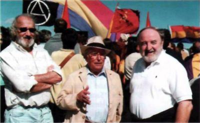 |
Hace un par de meses se estrenó la película La guerrilla de la memoria, dirigida por Javier Corcuera con producción de Montxo Armendáriz, rodada parcialmente en los montes de Santa Cruz de Moya. En esta foto, Armendáriz, a la izquierda y el periodista Diego Carcedo, a la derecha con Florián García “Grande” en el centro (Foto de Santiago Torralba). |
En el informe de “Pedro” se recoge bajo el apodo de “Elvira” la presencia de este dirigente del Partido en el campamento de Cerro Moreno, las críticas que se le hacen por su forma de dirigir el Comité Local, su mala disposición para asumir sus errores, y su distanciamiento del Partido posteriormente, comunicándolo a la Agrupación guerrillera días después del asalto por medio de una carta. A fecha de hoy, en “Tomás” parece estar la clave del conocimiento del campamento por parte de la Comandancia. Ya comentamos cómo a finales de 1946 había llegado a Valencia desde Francia enviado por la dirección central del partido. El 20 de enero de 1947 caerá buena parte de la cúpula del Comité Regional de Valencia, entre ellos Mariano Ortega Galán (“Borrás”), Alberto Sánchez Mascuñán (“César”) y Manuel Moreno Mauricio (“Teo”). En Francia se comentó que el chivato había sido “Tomás”, el mismo “Tomás” que estará presente en Cerro Moreno. El último dato que nos consta hace referencia al envío por parte de la dirección comunista en el país vecino, una vez retirada la Agrupación guerrillera, de “Jacinto” para ajusticiar a “Tomás”.
Con todo, y mientras los documentos o los testimonios no sean irrefutables, se pueden ir añadiendo teorías a las teorías. Una nueva podemos sumar a las ya citadas, también de corte oral. Se trata de los comentarios que los guardias del destacamento de Cañizares realizaron tras la muerte de "El Capitán", recogida recientemente por Manuel Martínez. Por esas fechas dichos agentes de esa zona se vanagloriaban de que gracias a la documentación incautada a Anastasio Serrano habían podido efectuar el asalto a Cerro Moreno. Es poco el tiempo transcurrido entre una y otra fecha. El acta de fallecimiento de "El Capitán" indica que murió a las veintiuna horas del día 2 de noviembre en el sitio de Cobacho Bodoque, en lo que debió ser un servicio a la espera. El asalto a Cerro Moreno fue el día 7 de madrugada, apenas cuatro días para preparar todo el operativo.
A la luz de estas posibilidades, lo que parece claro es que la guardia civil estaba informada, bastante bien informada, pues no se prepara un operativo tan grande, el más amplio contra el AGLA sin noticias precisas. Se comenta también que el grupo venía “vendido desde Francia”, de ser así el chivatazo apunta a lo más alto del PC. Personalmente lo veo difícil. La Comandancia, como vemos, conocía los apodos y la fisonomía de los guerrilleros y hasta el número aproximado de los mismos que se hallaban en el campamento, pero desconoce que las reuniones importantes se han celebrado hará tres semanas, como también les pilla por sorpresa la presencia de los componentes del grupo de San Martín. Por otro lado es difícil que en Francia supiesen la localización exacta del campamento cuando ni el propio guía “Ibáñez” lo conoce hasta que no enlaza con el grupo de “Francisco”. La localización del campamento por parte de los guardias parece ser de esos días. Sabían donde estaba el campamento y que allí había muchos, dieciséis, guerrilleros entre los que se encontraba la dirección del AGLA. La información por tanto no parece ni de última hora ni de hace tiempo. Dentro del infortunio, algo de suerte hubo, pues de no ser así, sólo un día antes había no 13, sino 18 guerrilleros, y cuarenta y ocho horas antes hasta 23. La información por tanto sale de antes. No de última hora sino, llamémosle así, de penúltima. Los preparativos de la operación consistirían en cerciorarse de que en el sitio exacto se encontraba el campamento. Así se entienden las referencias tanto de “Pedro” como de la propia guardia civil cuando afirman que “el asalto lo prepararon minuciosamente durante varios días”, o “después de realizar varios y minuciosos reconocimientos de aquel lugar por varios jefes y oficiales” apostados en los montes de la franja sur.
Lo ocurrido en Cerro Moreno fue un duro golpe que no acabó de asimilarse, ciertamente fue un punto de inflexión en el AGLA. Hasta José Gros lo recordará casi un año después cuando en 1950 venga, también con “Ibáñez” y “José el Alicantino” para realizar algo más que un informe del estado de la Agrupación y tantear la orden del abandono de la lucha en el monte. Pero el número de guerrilleros muertos, la forma de ser enterrados, la desigual y contundente fuerza del cuerpo represivo, la duración de combate, la huida de uno de ellos, el desconocimiento de varios de los nombres, la ignorancia de dónde estuvo la traición, la propia información omitida y prohibida durante tanto tiempo, todo ello dio origen a múltiples formas de recreación de lo sucedido, que de alguna manera configuran el mito y la leyenda, el ensueño y la realidad de Cerro Moreno. No sé hasta qué punto la oralidad, en este caso, no puede ser aceptada también como método de conocimiento en una zona, un pueblo, Santa Cruz de Moya, y unas gentes a las que la geografía y la historia les exigió mucho más de lo que les ha dado siempre, demostrando que supieron estar a la altura de las circunstancias. Aunque su propia historia, el calvario de “ley de fugas” y “arrancapinos” que dignifica los nombres de los Antón, Pastor, Argilés, Alcoriza, Jarque, etc. y condena los de sus sanedrines y “diablos” esté todavía por escribirse.
BIBLIOGRAFÍA
Alcalá Ruiz, Emencio “Germán”: Memorias de un guerrillero, (El maquis en la Sierra de Cuenca), Ed. de Salvador F. Cava, Fundación Cultural Cuenca, 2001.
Aguado Sánchez, Francisco: El maquis en España, Madrid, San Martín, 1975.
Cossías, Tomás: La lucha contra el maquis en España, Madrid, Editora Nacional, 1956.
Cuéllar Toledo, Ernesto: El Manco de La Pesquera, Cuenca, Diputación Provincial, 1998.
Gros, José: Abriendo camino. Relatos de un guerrillero comunista español, París, Colección Ebro, 1971.
Esteban Cava, Luis: La Serranía Alta de Cuenca, Cuenca, 1994.
Heine, Harmut: La oposición política al franquismo, Crítica, Barcelona, 1983.
López Villaverde, Ángel Luis: Cuenca durante la Segunda Republica, Cuenca, Diputación Provincial, 1997.
Romeu Alfaro, Fernanda: La Agrupación Guerrillera de Levante, Valencia, Edicions Alfons el Magnànim, 1987.
Saiz, Fernando: “El maquis, entre la historia y la tragedia”, en Olcades, n° 12, Cuenca, 1982, pp. 253-268.
Serrano, Secundino: Maquis, Madrid, Temas de Hoy, 2001.
Sorel, Andrés: La guerrilla española del siglo XX a través de sus documentos, relatos y protagonistas, París, Colección Ebro, 1970.
Yusta Rodrigo, Mercedes: La guerra de los vencidos. El maquis en el Maestrazgo turolense, 1940-1950, Zaragoza, Institución Fernando el Católico, 2000.
Informes de “Pedro” e “Ibáñez”, Archivo Histórico del PC.
Libros de Defunciones (Ayuntamiento de Santa Cruz de Moya y de Cañizares).
Testimonios orales: Florián García Velasco “Grande", Adelino Pérez Salvá “Teo”, Emencio Alcalá Ruiz “Germán”, Melitón Ruiz Pérez “Alfaro”, Celso Huerta Jiménez, Basilio López Malavia, Raúl Sánchez Antón y Domingo Antón Esteban.